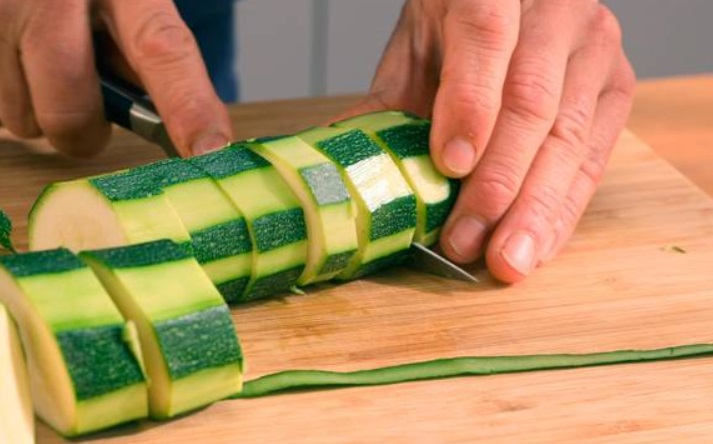
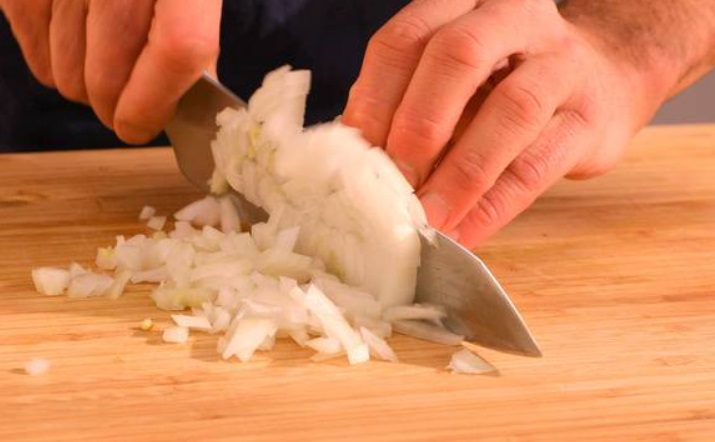
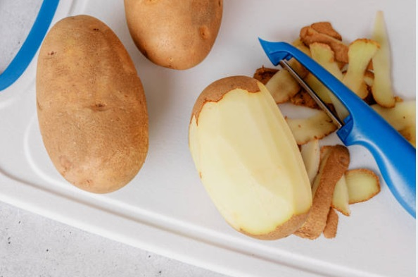
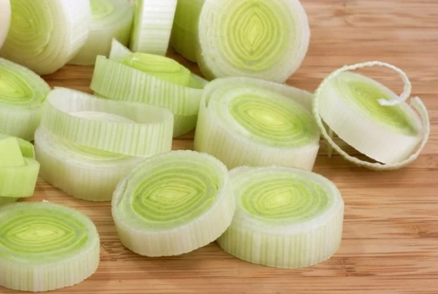
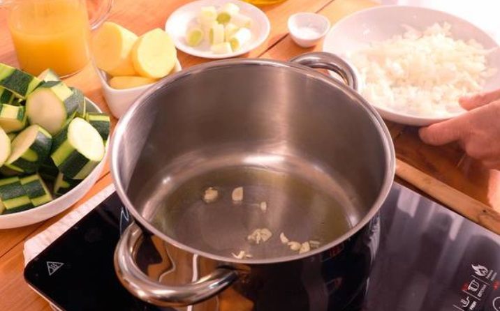
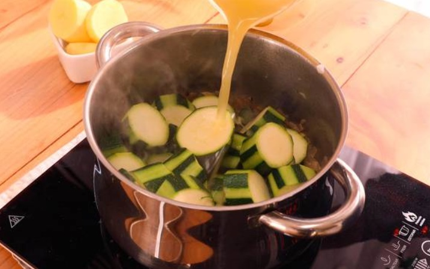
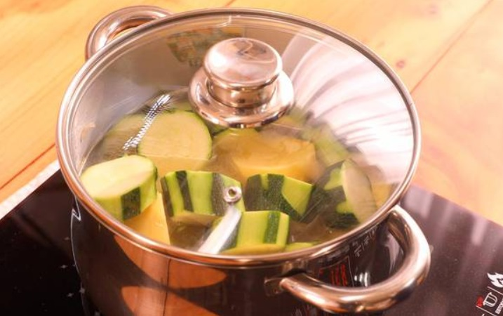
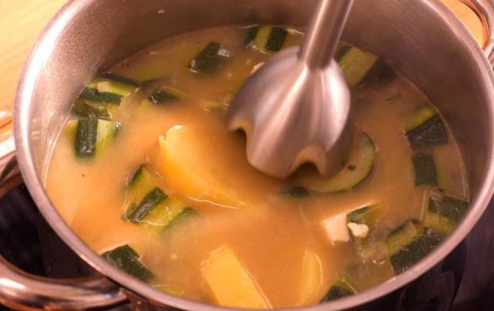
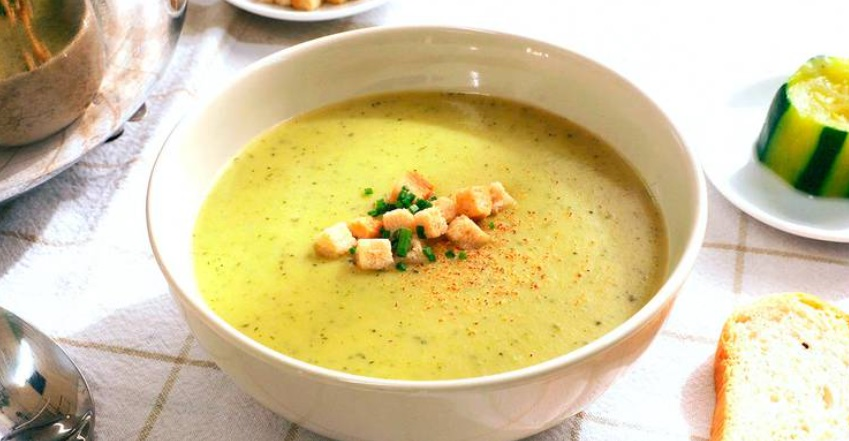

Receta de crema de calabacín
 Volver a la página principal
Volver a la página principal
Crema de calabacín
Ingredientes
Paso a paso
Resultado final
Ingredientes
- 3 Calabacines
- 1 Patata
- 1 Puerro
- Cebollino
- 1 Cebolla
- 1 Dientes de ajo
- 6 Quesos en porciones
- 500 ml de Caldo de verduras
- 25 ml de Aceite de Oliva
- Picatostes
 Voler al inicio
Voler al inicio
Paso a paso
1º Paso: Cortar ingredientes
3 Calabcines
1 Patata
1 Cebolla
1 Diente de ajo
1 Puerro
-Limpia los calabacines, corta los extremos y pela los calabacines. Corta los calabacines en rodajas grandes.

-Pica la cebolla y el diente de ajo.

-Pela la patata y córtala en rodajas grandes.

-Lava y trocea el puerro.

2º Paso: Sofreir
25 ml de Aceite de Oliva
Sal
-Pon una cazuela en el fuego y agrega un chorro de aceite de oliva, añade el ajo y la cebolla picada, el puerro, sal y remueve.
Sofríe la verdura durante unos minutos.

-Añade al sofrito el calabacín, el caldo de verduras y la patata.
Remueve con la cuchara y añade agua hasta cubrir las verduras.

3º Paso: Cocción
-Tapa la cazuela y deja cocinar durante 20-25 minutos hasta que la patata esté cocida.

4º Paso: Triturar
6 Quesos en porciones
-Apaga el fuego, añade los quesitos y tritura con la batidora hasta obtener una crema fina.

Volver al inicio
Resultado Final

Volver al inico